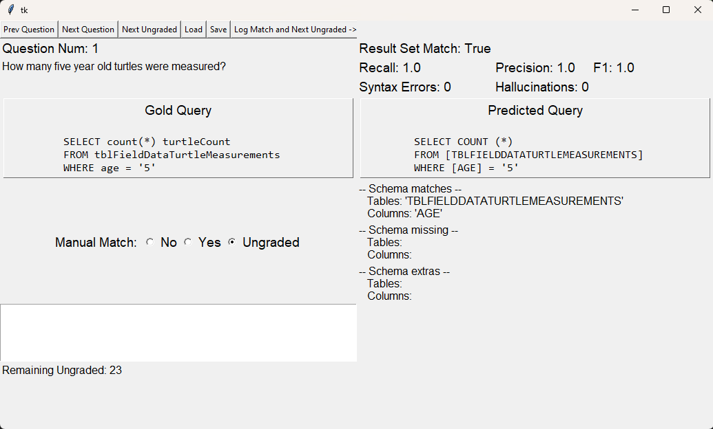

Manual SQL Correctness Validation Tool¶
Because true semantic equivalence between a Gold and Predicted query is, more-or-less, unsolvable, we leave this task to the intrepid researcher. To reduce the pain involved in SQL-SQL comparisons, we created a simple TKinter-based GUI-based app.
Open the app from the root directory:
python ./src/query_manual_validation.py
You should be greeted by a GUI window that looks similar to:
The Validation Proces:
- Load a performance annotation file by pressing the [Load] button.
NOTE: The load window defaults to ./data/nl-to-sql-performance_annotations/pending_evaluation/ which is the correct location.
Cycle through the ungraded queries that achieved result set matching by pressing the [Next Ungraded] button.
For each ungraded query, compare the Gold and Predicted varients and adjust the Manual Match score using the radio buttons.
- Pressing [Next Ungraded] or [Next Question] saves your input.
NOTE: Alternately, for correct queries, pressing [Log Match and Next Ungraded] marks the query as correct and then loads the next ungraded query.
- Once Remaining Ungraded == 0, save the file by pressing the [Save] button.
NOTE: the save window defaults to ./data/nl-to-sql-performance_annotations/ which is the correct location to save.